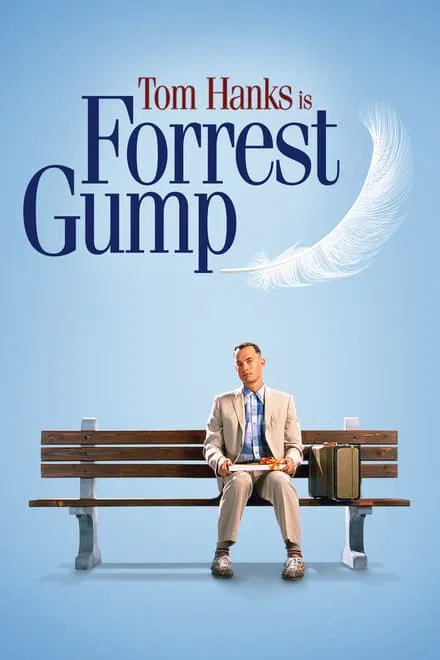

- The Godfather (1972)
A great movie about a very respectful and gutsy italian mafia guy to whom people look up to during hard times for help.
- Schindler's List (1999)
Movie about a businessman who saved as many Jews as he can from the Nazis during the war.

- Saving Private Ryan (1998)
A war movie where a group of soldiers goes to save a paratrooper whose whole unit is killed in action.
- Django Unchained (2012)
A movie in which a guy saved a man and his girlfriend during the period of Slavery in America.
- Toy Story (1995)
A great animation film in which toys comes to life to show the perspective of life through there eyes.It's also had lot of sequels which all are pretty good.
- The Shining (1980)
A actually good old horror movie which shows a father who took a job as a winter caretaker at a secluded hotel going insane as Sinister forces ask him for sacrifice of his family.It had a pretty good sequel named Doctor Sleep (2019)
- Raging Bull (1980)
Movie about a boxer who is really good inside the ring but is messed up in his personal life.
- Forrest Gump (1994)
A man with low IQ hovers through life doing and achieving things which otherwise seems impossible to others.
 - L.A. Confidential (1997)
A cop gangster movie wrangled up to lives of police officers, detectives,movie stars,drug mafia's, corrupt police department and government standing out and fighting against each other for good and bad.
- Scent of a Woman (1992)
A army veteran turned blind hires a school boy for help with his daily chores and in return he helps the poor to deal with various problems he suffers at a prep school.